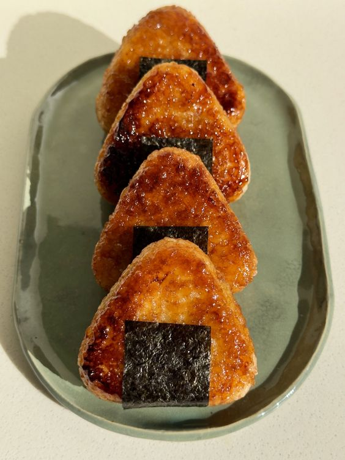

Yaki onigiri recipe

Yaki onigiri is a japanese dish, made with riceball and your little pan.
With little additions yaki onigiri is crispy on the outside, and mochi like on the inside.
Ingredients
- Rice
- Cheese
- Soy sauce
- Black sugar
- Butter
Steps
- Cook rice.
- Make a riceball and add cheese inside it.
- Put butter on the pan with soysauce and a little bit of sugar.
- Burn them a little bit.
- Put the rice ball in the pan and, shower it with the sauce.
- Wait until the riceball is crispy and fully coated with sauce on the outside.